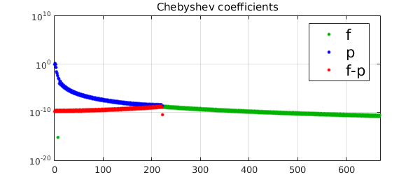

1. One dimension
As shown in [1, Thm. 4.2], the Chebyshev coefficients of the degree $n$ polynomial interpolant $$ p=\sum_{i=0}^n \hat c_iT_i(x) $$ of a (Lipschitz continuous) function $f$ with Chebyshev expansion $$ f=\sum_{i=0}^\infty c_iT_i(x) $$ are obtained by aliasing the coefficients for the higher-degree Chebyshev polynomials. Specifically, the coefficient $c_i$ has error $$ \hat c_i- c_i = (c_{2n-i}+c_{4n-i}+\cdots)+(c_{2n+i}+c_{4n+i}+\cdots), $$ except for the 0th coefficient, $$ \hat c_0-c_0 = c_{2n}+c_{4n}+\cdots, $$ and the $n\mbox{th}$ coefficient, $$ \hat c_n-c_n = c_{3n}+c_{5n}+\cdots. $$
Now, smooth functions have rapidly decaying Chebyshev coefficients, and in particular, if $f$ is analytic, its Chebyshev coefficients decay geometrically at the rate $c_n=O(\mbox{exp}(-kn))$ for some constant $k>0$. This geometric decay, combined with the aliasing formulae above, tells us that the Chebyshev coefficients of the interpolant $p$ have errors $\hat c_i-c_i$ of predictably varying magnitude, for the dominant term in the error is $c_{2n}$ for $c_0-\hat c_0$, $c_{3n}$ for $c_n-\hat c_n$, and $c_{2n-i}$ for the rest. From this we expect that a Chebyshev interpolant for an analytic $f$ would have high accuracy in $c_0$ and very high accuracy in $c_n$, relative to the other $c_i$.
Here is an illustration. For an analytic function $f$, we find its Chebyshev expansion coefficients. We then compute a low-degree interpolant $p$ and examine the accuracy of its Chebyshev coefficients.
clear, close all
LW = 'linewidth'; MS = 'markersize'; FS = 'fontsize';
CO = 'color'; green = [0 .7 0];
lw = 2; ms = 10; fs = 16;
fori = @(x) log(sin(10*x)+2);
f = chebfun(fori);
p = chebfun(fori,round(length(f)/3));
pc = p.coeffs;
fc = f.coeffs;
plotcoeffs(f,'.',CO,green,LW,lw,MS,ms), hold on
plotcoeffs(p,'.b',LW,lw,MS,ms)
plot(0:length(pc)-1,abs(pc-fc(1:length(pc)))+eps,'.r',LW,lw,MS,ms)
h_legend = legend('f','p','f-p');
set(h_legend,FS,fs)
The green and blue dots show the absolute values of the Chebyshev coefficients for $f$ and the interpolant $p$. Our focus here is on the red dots, showing the error in Chebyshev coefficients. Two observations can be made: (i) the error grows geometrically with the degree until degree $n-1$, and (ii) (note the rightmost red dot) at the end the error is much much smaller. These effects clearly reflect the aliasing formulae given above.
Let us note the connection between the aliasing in $\hat c_0$ and Gauss quadrature. The exact integral of $f$ is equal to the degree 0 coefficient $d_0$ in its Legendre expansion $f(x)=\sum_{i=0}^\infty d_iP_i(x)$, where $P_i(x)$ is the Legendre polynomial of degree $i$. Gauss quadrature approximates this by $\hat d_0$, the degree 0 coefficient of the degree $n$ polynomial interpolant. The error in Gauss quadrature, $\hat d_0 - d_0,$ can accordingly be interpreted as the result of aliasing the term $d_{2n+2}P_{2n+2}(x)$ and terms of higher degree. See section 8 of [2] for more details.
The extremely high accuracy of the $n\mbox{th}$ coefficient is peculiar to the Chebyshev interpolation process, and this coefficient is exact if $f$ is a polynomial of degree up to $3n-1$. Although we are unaware of a practical application of this fact, it does suggest that if only the $n\mbox{th}$ Chebyshev coefficient is of interest, then a $n+1$-point Chebyshev interpolation could suffice, even if the corresponding interpolant is rather poor.
Let's repeat the computation with a non-analytic function.
fori = @(x)abs((x - 0.5).^3); % twice differentiable but not analytic
f = chebfun(fori);
p = chebfun(fori,round(length(f)/6));
pc = p.coeffs;
fc = f.coeffs;
clf
plotcoeffs(f,'.',CO,green,LW,lw,MS,ms), hold on
plotcoeffs(p,'.b',LW,lw,MS,ms)
plot(0:length(pc)-1,abs(pc-fc(1:length(pc)))+eps,'.r',LW,lw,MS,ms)
xlim([0 length(f)/2])
h_legend = legend('f','p','f-p');
set(h_legend,FS,fs,'Location','Best')

For non-analytic functions the difference in accuracy is less prominent, because the Chebyshev coefficients decay more slowly. The red plot is still roughly a 'mirrored' version of the green one, and the first and $n\mbox{th}$ coefficients still have higher accuracy than most of the rest. Again, these are all consequences of the aliasing formula.
2. Two dimensions
Let's try an analogous experiment in Chebfun2. As before we start with a smooth bivariate function, form its chebfun2, and construct a low-degree interpolant (degree 5 in each direction). Then we examine the accuracy in the coefficients, which we show in matrix form.
p = chebfun2(@(x,y)sin(x+y)+cos(x-y)); pc = chebcoeffs2(p); [x,y] = chebpts2(6); % construct chebfun2 of degree [5 5] from values on 6x6 grid pt = chebfun2(p(x,y)); ptc = chebcoeffs2(pt); format shortE ptc-pc(1:size(ptc,1),1:size(ptc,2))
ans = -8.0518e-10 7.5521e-09 1.4432e-07 -2.2991e-06 -3.2044e-05 -2.6284e-13 7.5521e-09 1.8437e-08 1.6345e-07 -2.6448e-06 -3.6856e-05 5.2322e-12 1.4432e-07 1.6345e-07 -8.6613e-08 6.8312e-07 9.6245e-06 9.4133e-11 -2.2991e-06 -2.6448e-06 6.8312e-07 2.3513e-07 1.6237e-06 -1.5009e-09 -3.2044e-05 -3.6856e-05 9.6245e-06 1.6237e-06 -4.1310e-07 -2.0918e-08 -2.6281e-13 5.2322e-12 9.4133e-11 -1.5009e-09 -2.0918e-08 -2.5887e-20
The $(i,j)$ entry of this matrix is the error in the coefficient for $T_{j-1}(x)T_{i-1}(y)$. Observations similar to the 1-d case can be made: looking horizontally or vertically, the low-degree coefficients are more accurate than the higher ones, except at the very ends, where the accuracy is much better. Note the exceptional accuracy at the lower-right corner.
Reference
[1] L. N. Trefethen, Approximation Theory and Approximation Practice, SIAM, 2013.
[2] L. N. Trefethen and J. A. C, Weideman. The exponentially convergent trapezoidal rule, SIAM Review (2014) 56 (3), 385-458.